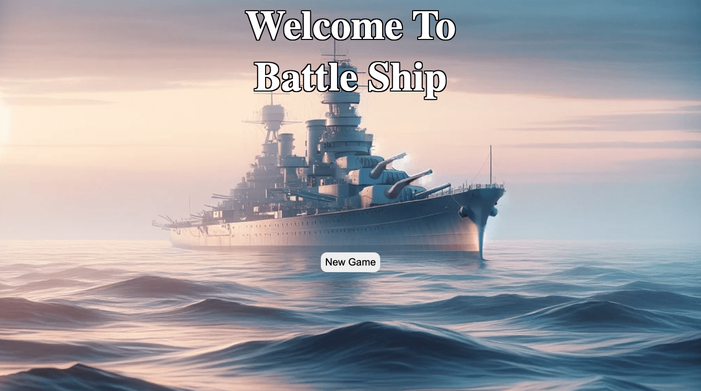
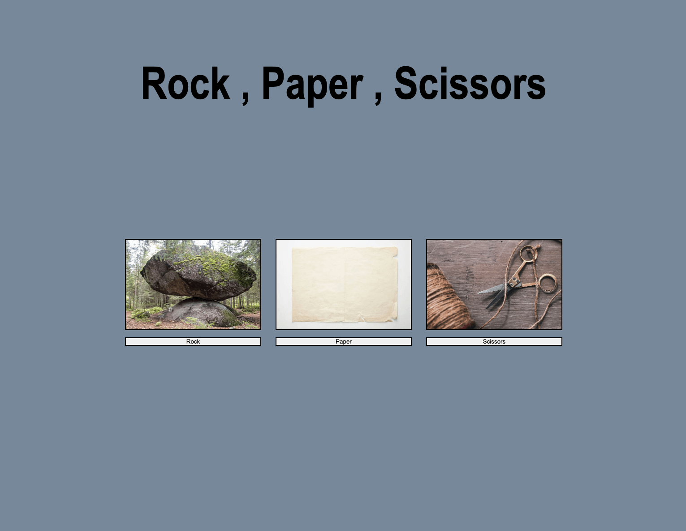
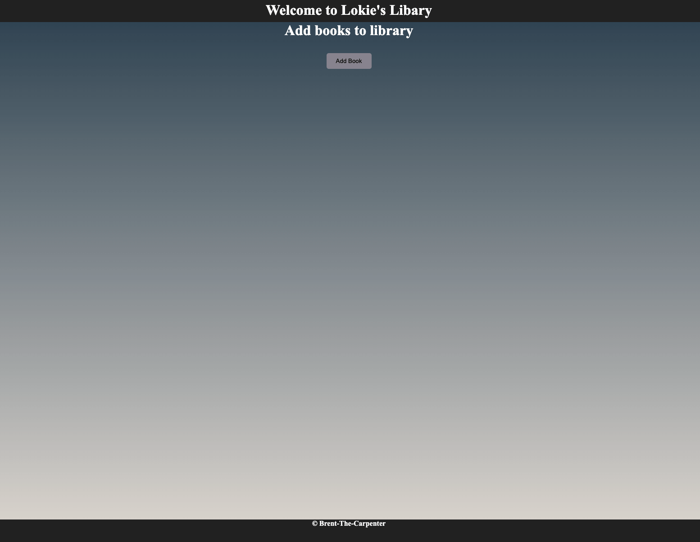
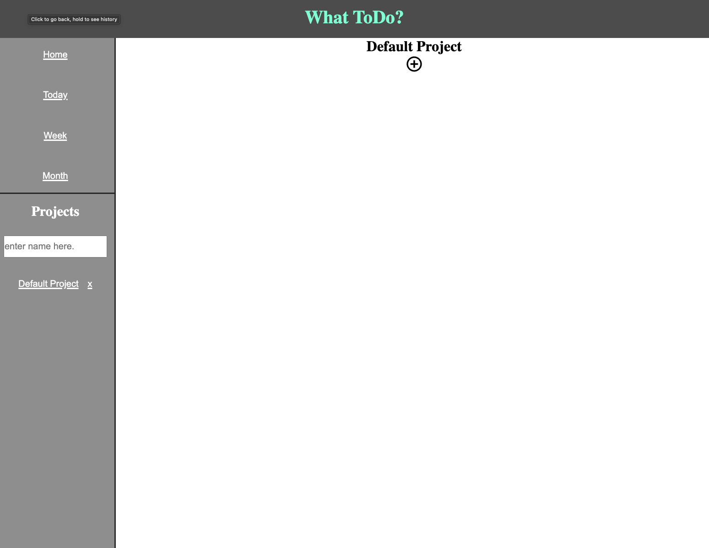
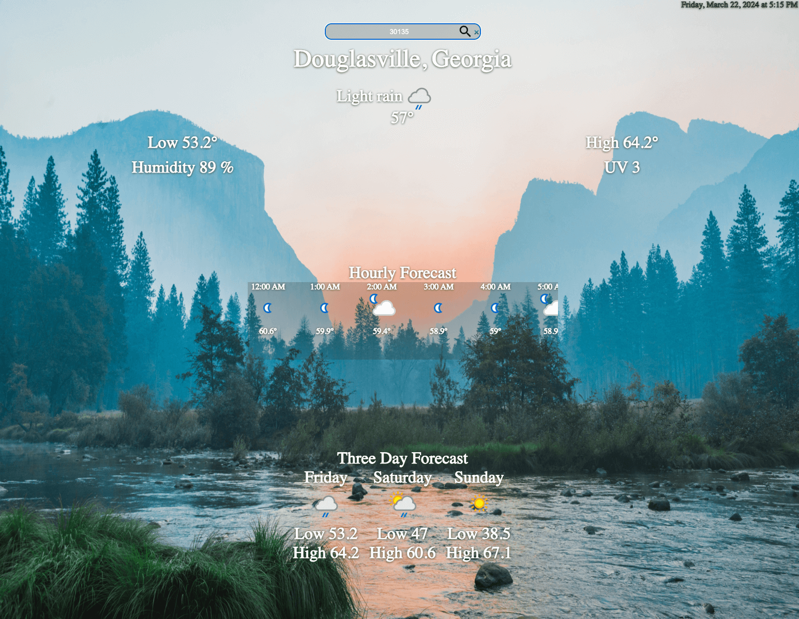
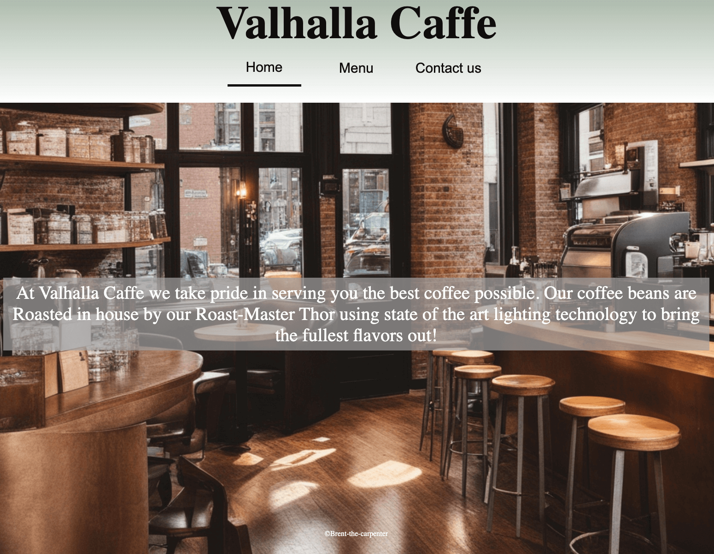

My work

Battle Ship
This is my BattleShip game. You can choose to play against AI or another player!

Rock Paper Scissors
Play against the computer and see how many times you can win!

Library
This is a web based library. You can keep track of books that you need to read or have read already.

ToDo App
A web based Todo list. You can add different todo list and make make new todos with due date.

Odin Weather App
Is it raining where you are? Oh your not sure well just put your zip code or city in this weatherApp and find out!

Valhalla Caffe
My goal of this project was to make a responsive resturant page with good layout.